DATAS COMEMORATIVAS
Veja algumas datas comemorativas.
 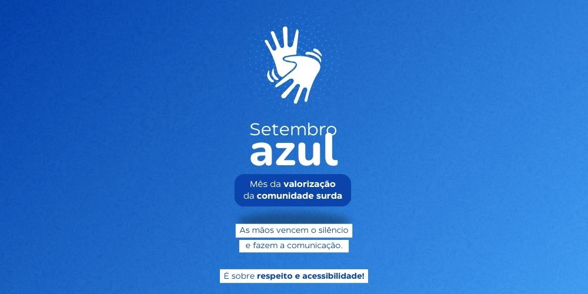
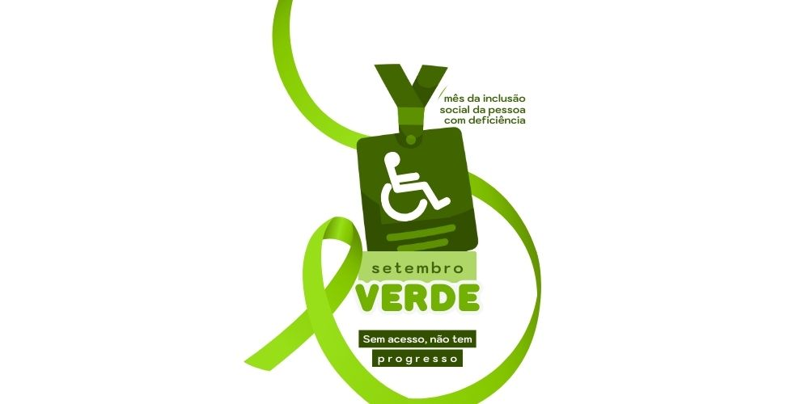
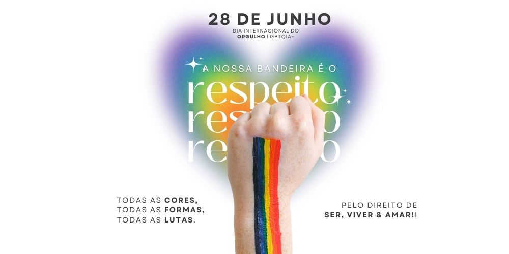
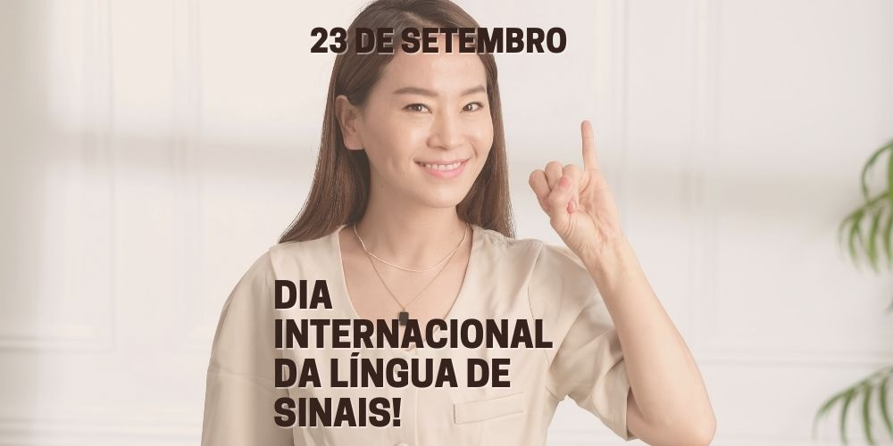
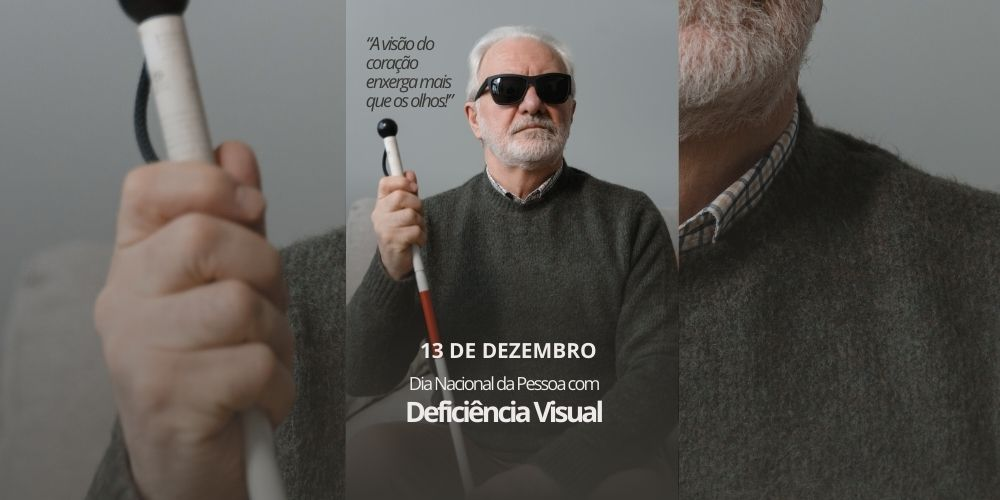
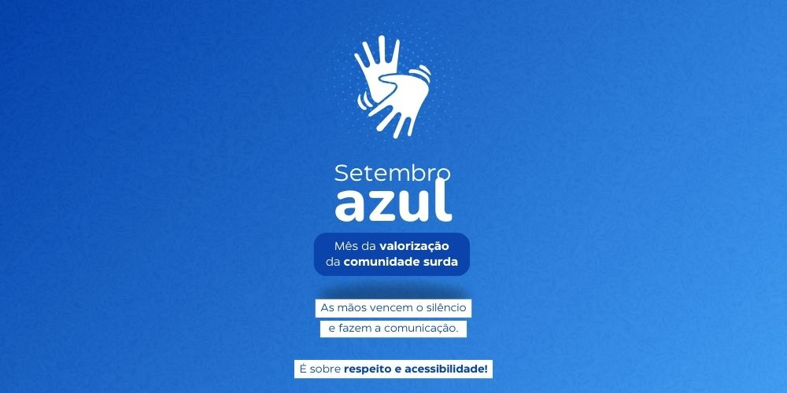
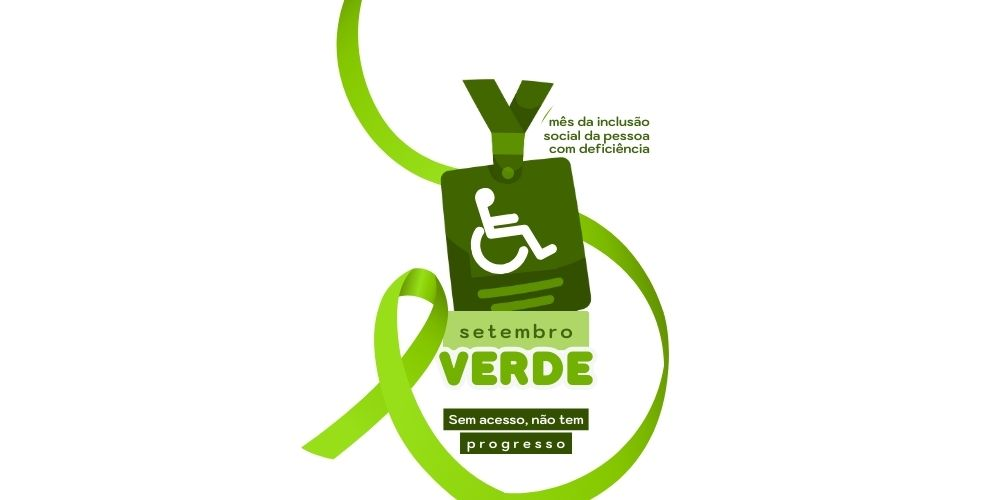
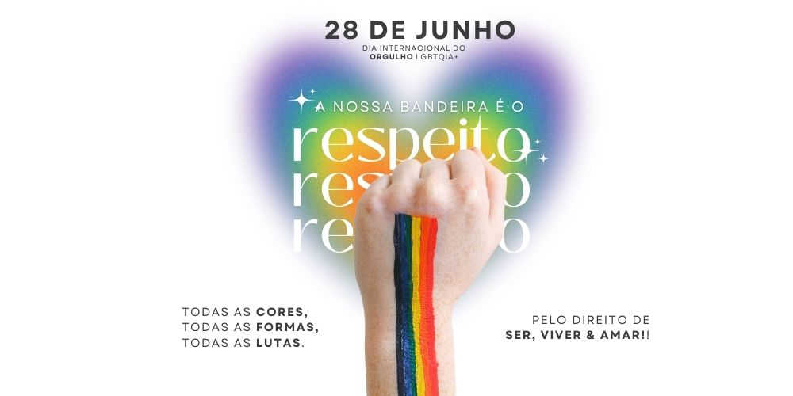
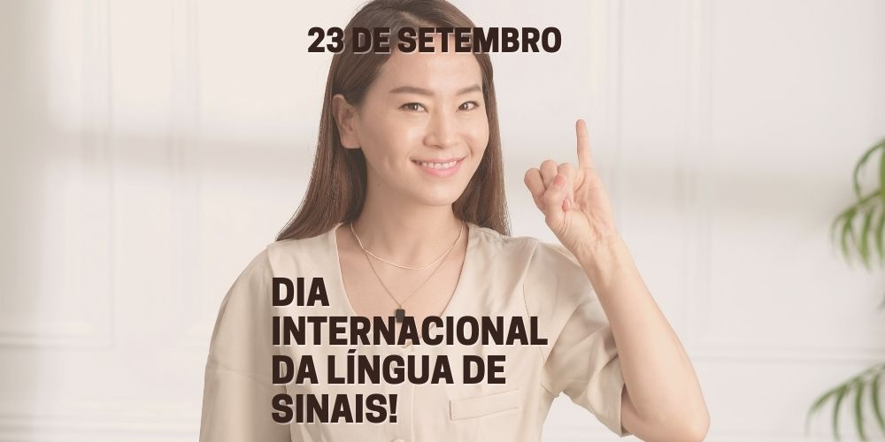
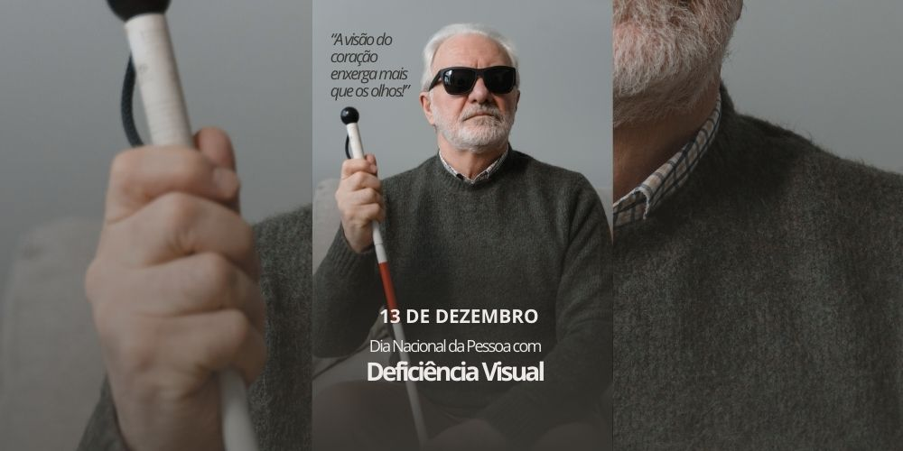
Veja algumas casos de superação.
01
Daniel Dias é um nadador paralímpico brasileiro da cidade de Camanducaia, no interior de Minas Gerais.
O atleta nasceu com uma má-formação congênita, sem as mãos e os pés.
Mas com apenas 3 anos de idade, passou por uma cirurgia para uso de prótese,
o que ajudou a aumentar sua qualidade de vida.
Aos 30 anos, Daniel é detentor de 5 recordes mundiais. São eles: medalhas de ouro nos jogos Parapan-Americanos (são oito medalhas ao todo),
nado de 100m e 200m livre, 100m costas e 200m medley.
02
DAntônio Tenório da Silva é um dos maiores nomes do judô nacional, tendo conquistado suas primeiras medalhas em Atlanta (EUA), 1996.
Ao contrário dos atletas anteriores desta lista, o judoca não nasceu com a sua deficiência,
mas perdeu a visão ao longo da vida; primeiro a do olho esquerdo, aos 13 anos, e depois a do olho direito.
Antônio já praticava o esporte, mas com a perda da visão, mudou para a categoria paralímpica. Além de ser tetracampeão mundial,
é o único atleta a obter 4 medalhas de ouro seguidas no judô paralímpico.
03
Bethany Meilani Hamilton, nascida em 8 de fevereiro de 1990 no Hawaii, é uma surfista que sobreviveu a um ataque de tubarão em 2003,
no qual teve o braço esquerdo amputado. No entanto, ela voltou a praticar o esporte.
Depois de ensinar a si mesma a surfar com um braço, no dia 10 de janeiro de 2004, ela entrou em uma competição importante, onde conseguiu a quinta colocação.
Aos 24 anos, em 2014, ela se tornou campeã de um dos principais campeonatos de surf do mundo, o "Surf- N -Sea Pipeline Women's Pro".
Bethany é fundadora da Organização Não Governamental (ONG) ‘Amigos de Bethany’, na qual ajuda pessoas atacadas por tubarões a continuarem com a suas vidas.
Veja algumas datas comemorativas.
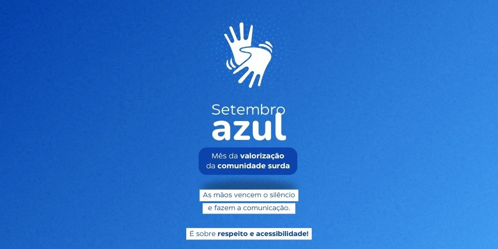
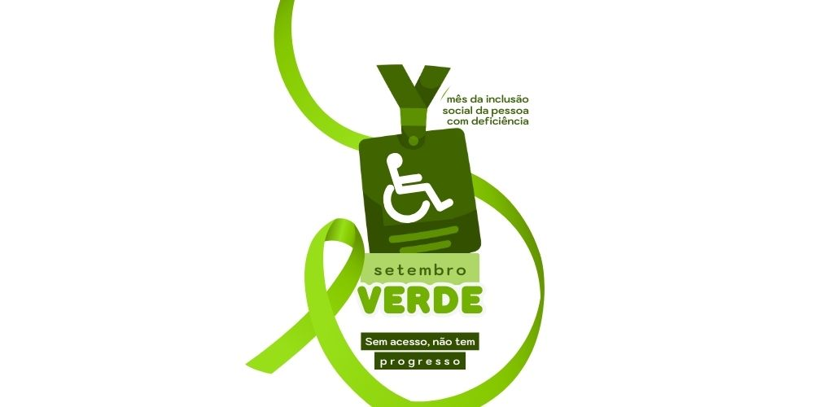
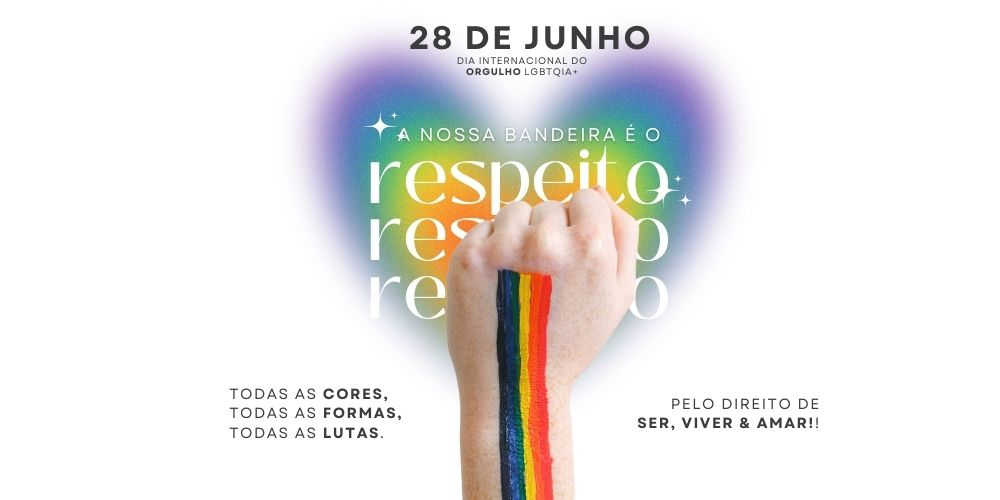
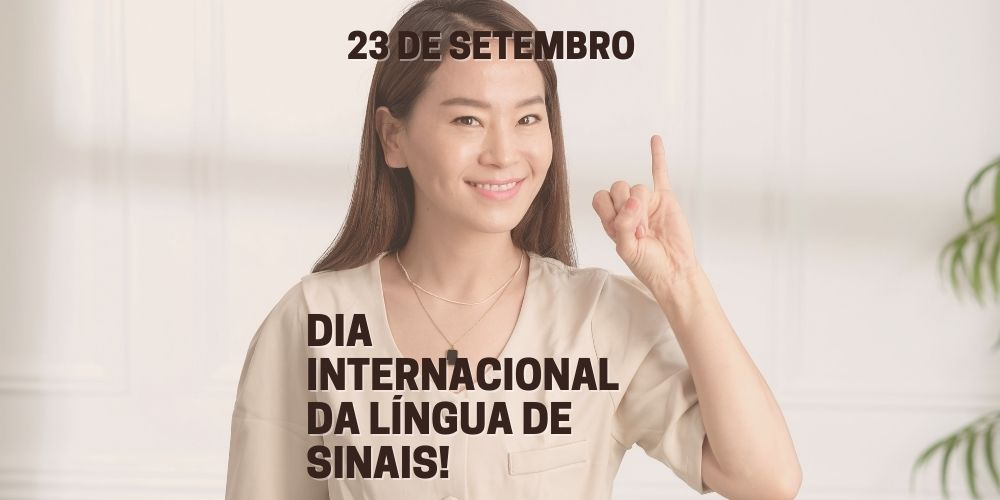
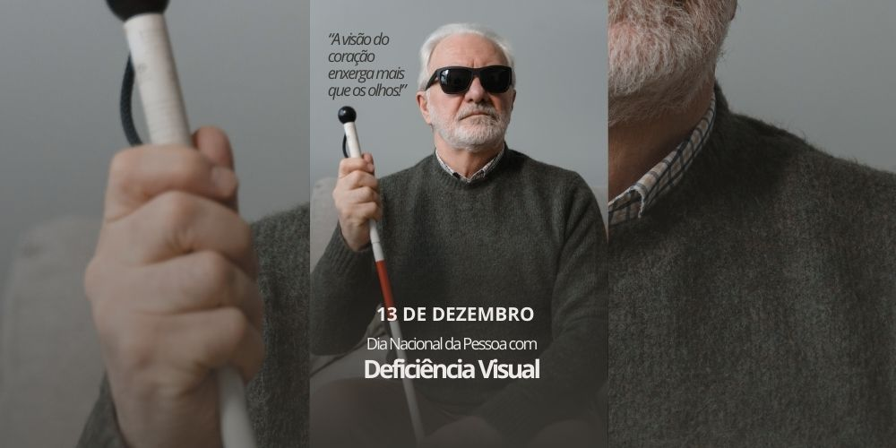